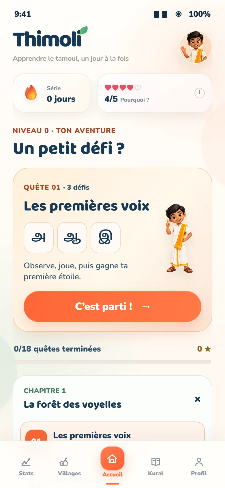
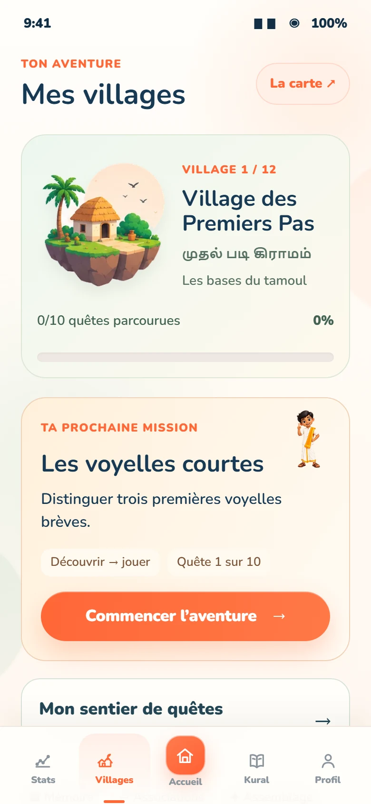
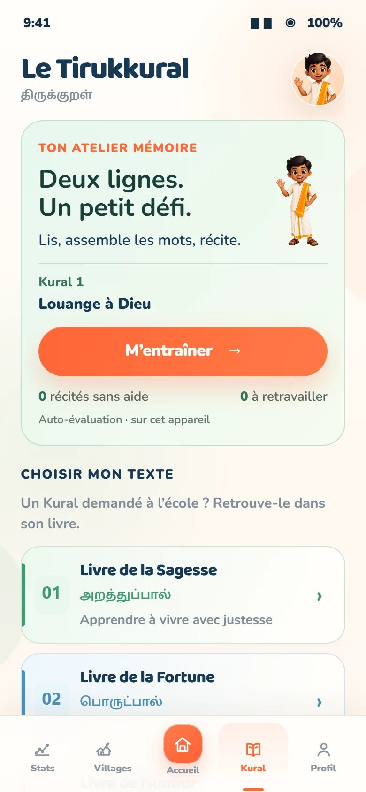
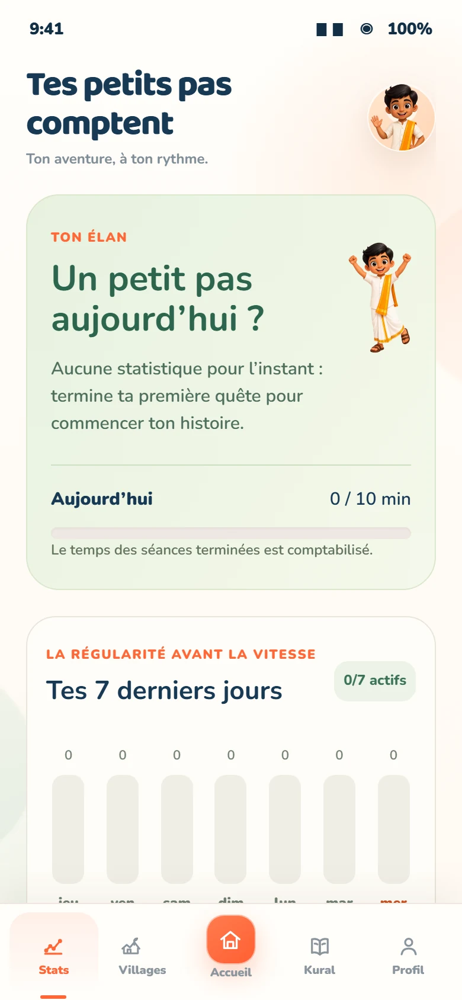

Un départ guidé
18 quêtes et 54 activités pour reconnaître les premiers sons, lettres et mots sans se perdre.
01Thimoli t’accompagne des premiers sons jusqu’aux villages, avec des missions courtes, des jeux et un atelier dédié aux 1 330 Tirukkural.
Conçu pour avancer sans pression
quelques minutes, à ton rythme, même en partant de zéro.

தமிழ் உன்னுடன் வளரட்டும்
Commence par le niveau zéro, ouvre tes villages, entraîne ta mémoire et retrouve facilement ce que tu as déjà appris.
Les écrans ont été entièrement mis à jour : démarrage guidé, villages, atelier Tirukkural et statistiques lisibles. Sur mobile, fais-les glisser du doigt.



Thimoli alterne écoute, mémoire, association et construction. Chaque activité prépare la suivante pour transformer la découverte en vraie progression.
18 quêtes et 54 activités pour reconnaître les premiers sons, lettres et mots sans se perdre.
0112 villages de 10 quêtes, avec écoute, mémoire, association, assemblage et révision.
02Lis, reconstruis puis récite à ton rythme les 1 330 Kurals, répartis en 133 chapitres.
03Chaque village débloque de nouvelles situations et consolide les précédentes. Tu retrouves ta prochaine mission, tes jeux et ton avancée au même endroit.

Thimoli a été imaginé pour celles et ceux qui comprennent parfois le tamoul sans encore oser le lire ou le parler. L’app rend ce chemin plus accessible, moderne et fier.
Le tamoul ne devrait pas sembler inaccessible à la génération qui veut le retrouver.
La démo présente maintenant la logique réelle de l’application. Aucun compte, aucun formulaire trompeur et aucun suivi publicitaire.
Fais glisser les nouveaux écrans sur mobile et découvre les fonctions principales.